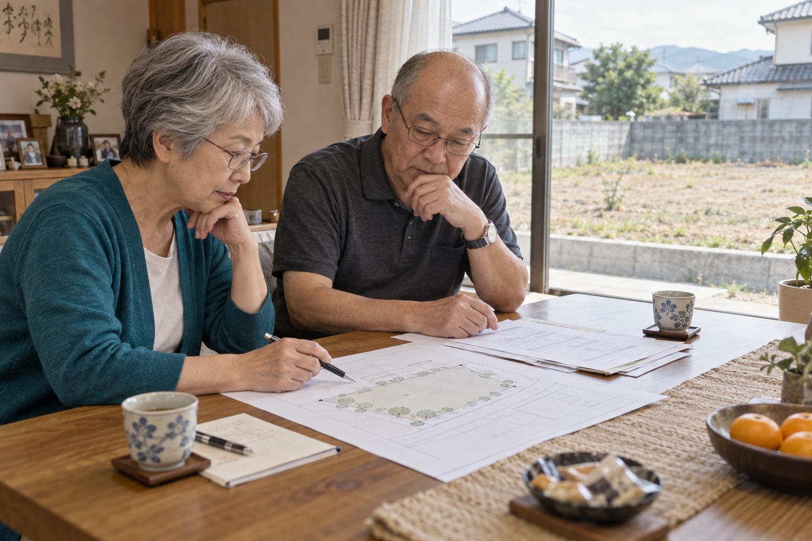
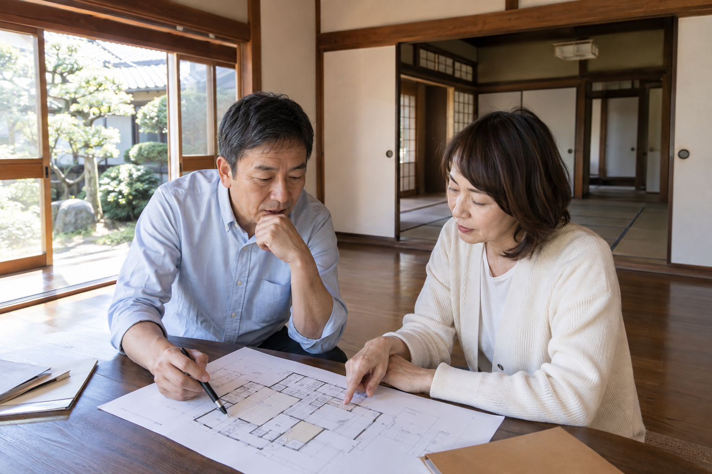

草刈りのためだけに、週末に車を走らせる。固定資産税の通知が来るたびに、「あの土地、何かに使えないかな」と家族で話す。そんなところへ駐車場の提案が届くと、ひとまず話を聞いてみたくなります。
ただ、最初に届いた提案が、その土地の可能性のすべてではありません。建てて貸す方法もあれば、土地のまま貸す方法もある。家が残っているなら、その建物を活かせるかもしれません。土地活用の最初の一歩は、契約先を決めることより、選べる方法を知ることだと私は思います。
受け継いだ土地や使っていない土地には、駐車場、賃貸住宅、土地貸し、売却などの選択肢があります。収入だけでなく、初期費用、管理の手間、将来の使い方から自分たちに合う方法を考えます。
公開予定日：2026年11月10日
土地活用・比較
草刈りのためだけに、週末に車を走らせる。固定資産税の通知が来るたびに、「あの土地、何かに使えないかな」と家族で話す。そんなところへ駐車場の提案が届くと、ひとまず話を聞いてみたくなります。
ただ、最初に届いた提案が、その土地の可能性のすべてではありません。建てて貸す方法もあれば、土地のまま貸す方法もある。家が残っているなら、その建物を活かせるかもしれません。土地活用の最初の一歩は、契約先を決めることより、選べる方法を知ることだと私は思います。
「土地活用」と聞くと、アパートや駐車場を思い浮かべるかもしれません。実際には、建物を持って貸すのか、土地だけを貸すのか、自分で使うのかで、お金も手間も大きく変わります。まずは次の候補を同じ紙に並べてみてください。
| 選択肢 | 使い方 | 最初に確かめたいこと |
|---|---|---|
| 月極駐車場・時間貸し駐車場 | 建物を建てず、車を置く場所として貸す | 周辺の需要と出入りのしやすさ。舗装・精算機・管理費を誰が負担するか |
| アパート・戸建て賃貸を新築する | 土地に建物を建て、家賃収入を得る | 建築費と借入の負担。空室や将来の修繕があっても続けられるか |
| 残っている家を貸す | 建物の状態に応じて、必要な修繕や改修をして貸す | 借り手が求める設備と改修費の釣り合い。故障時の対応 |
| 土地を貸し、相手が建てて使う | 事業者などに土地を貸して地代を得る | 用途と契約期間。将来、自分たちが使いたい時期と両立するか |
| 資材置き場・収納施設などに使う | 住まい以外の用途で貸す・運営する | 車両の出入り、音や景観、用途の制限。コンテナ等の設置も事前確認 |
| 自分や家族で使う・管理しながら保有する | 住まい、仕事場、庭などに使う。将来のために残す | 維持費を払う理由があるか。草刈りなどを誰が続けるか |
| 売却する | 持ち続ける負担を減らし、資金を別の目的に回す | 売値だけでなく測量・解体・仲介・税などの費用を引いた金額。家族の意向 |
この一覧は、すべての土地で実現できるメニューではありません。広さや形、道路との接し方、地域のルールによって候補は絞られます。それでも、最初から一つに決めてしまうより、比較するための質問が増えます。
例えば、同じ住宅地の土地でも、「数年後に子どもが家を建てるかもしれない」家族と、「遠方に住んでいて管理を手放したい」家族では、選び方が違います。
前者なら、将来使う時に終了できる契約か、活用後元に戻す費用がいくらかが重要です。駐車場も候補ですが、短期間の収入で整備費を回収できるとは限りません。建物を建てるための土地貸しは長期の契約になり得るので、自分たちの予定と合わせて考えます。
後者なら、管理委託の費用まで入れて貸す方法と、売却する方法を比べたいところです。建物が残っていて、借り手が見込めるなら、必要な部分を直して戸建てとして貸す案も加えられます。
どちらの場合も、まずは「この土地と、この先どう付き合いたいか」を家族で話してみましょう。毎月の収入を増やしたいのか、管理のための往復を減らしたいのかを言葉にすると、提案の見方が変わります。
駐車場にする場合、周囲に駐車場が少ないからといって、必ず借り手がいるとは限りません。戸建ての敷地内に駐車できる地域なのか、近くの事業所で従業員用の駐車場が足りないのか。同じ「住宅地」でも需要は違います。
賃貸住宅なら、単身者と子育て世帯のどちらを想定するかで、間取りや駐車台数が変わります。近くの募集物件は、家賃だけでなく、どれくらい募集が続いているかまで見ておきたい。地域の不動産事業者には「この広さなら、誰が借りそうですか」と聞いてみます。
私は住宅の計画を見る時、図面の中に部屋や駐車区画が収まるかだけでなく、毎日の使いやすさを考えます。車の切り返し、荷物の出し入れ、雨の日の移動。こうした使い勝手は、面積と利回りだけでは見えてきません。
土地活用の候補が見えてきたら、境界や道路との接し方、建てられる用途を専門家と現地で確認します。農地なら、転用などの手続きが必要かもしれませんので、この段階で相談します。
「6台分の駐車場にすれば、毎月4万8,000円」。そう聞くと、草刈りだけに通っていた土地が頼もしく見えてきます。でも、その金額が全部、自由に使えるお金になるわけではありません。何台埋まるのか、税金や管理にいくら出ていくのかまで見てみましょう。
ここでは、1台月8,000円、経費は月1万円と仮定して計算します。相場の紹介ではなく、空きが出た時の違いを見るための例です。
6台とも埋まれば、月4万8,000円から経費1万円を引いて、残るのは3万8,000円。3台しか埋まらなければ、残るのは1万4,000円です。半分空くだけで、手元に残る額はずいぶん変わります。
さらに、始める時に整備費を100万円払っていたら。その費用を取り戻すには、6台が埋まり続ける場合で約2.2年、3台なら約6年かかる計算です。この例は土地の購入費、借入返済、所得税等を含めていません。実際の提案では、それらも書き足して「家計から持ち出す月があっても続けられるか」を見ます。
アパートなら建築費と将来の修繕費、土地貸しなら自分に残る維持費、売却なら手続に必要な諸費用。候補ごとに「始める時」「続ける間」「やめる時」のお金を並べると、月々の収入だけでは気づかなかった違いが見えてきます。
サブリースの「お任せできます」という言葉も、どこまで任せられるかを聞きたいところ。家賃の見直し、修繕費を払う人、中途解約の条件を読んでから、家族の予定に合うかを考えましょう。
使っていない家を壊せば、管理が楽になりそう。そう考えた時こそ、解体後の税金も聞いておきましょう。住宅用地の特例が外れると、土地の固定資産税等が増える場合があります。解体費だけを準備して終わりにせず、自治体に「駐車場にした後はいくらくらいになりますか」と相談してから決めたいところです。
「砂利なら安く、アスファルトなら税金が高い」という話も、少し整理が必要です。土地そのものへの課税と、事業用の舗装や設備に対する償却資産の課税は別です。例えば、愛知県豊明市の申告案内では、舗装路面の例に砂利も挙がっています。砂利だから課税対象にならないと決めず、土地のある市区町村に整備内容を示して、申告や課税の扱いを聞いておきます。
「土地は親の名義のまま、建物は子どもがお金を出そう」。家族なら自然に出てきそうな案ですが、費用の出し方や名義の変え方によっては贈与税の確認が必要になります。誰が土地と建物を持ち、誰が費用を払い、誰が家賃を受け取るのか。この三つを紙に書いて、税理士に見てもらうと話が伝わります。
家族との相談は、提案が固まる前に。兄弟が将来使うつもりだったり、管理をお願いする人が遠方だったりすると、収支が良くても続けにくくなります。共有者がいる場合の同意や契約手続きは、家族の希望を聞くこととは分けて確認します。
建てて貸す、土地のまま貸す、売却する、将来のために持っておく。私は、こうした選択肢を比べながら、家族に合う方法を選んでほしいと思っています。
土地活用を提案してくれる会社には、それぞれ得意な分野があります。アパートの提案を受けたら、別の窓口で土地貸しや売却も聞いてみる。駐車場がよさそうなら、周辺の需要と初期費用を自分でも確かめる。一つの提案を入口にしながら、比較する余地を残せます。
家族で「残したいもの」と「これ以上負担にしたくないこと」を話したうえで、候補を二つか三つに絞ってみてください。大きな収入を生む計画より、無理なく付き合える方法が合う家族もいます。草刈りのたびに気が重くなる土地を、これからの暮らしに役立つ形へ変える。その方法は、一つではありません。

関連する住まいの機能・設備を探す
人生100年時代のリフォーム応援ナビサイト（部屋、建材・設備からさがす） ↗関連記事
【第16回】実家じまいは、空っぽにすることじゃない──家族の記憶と、家の次の使い方を整える【第4回】実家じまいは、親が元気なうちに。家族で考えるこれからの住まいこの記事を書いた人｜エイスケ
1986年生まれ。実家の工務店・不動産に10年間従事したのち、教育の世界へ。住宅と教育、両方の視点から「豊かな暮らし」をテーマに執筆します。